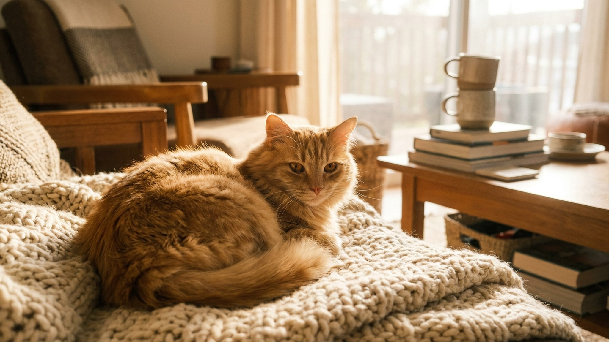

Бамбино весит меньше трёх килограммов, не имеет шерсти и не может запрыгнуть на стандартный подоконник. Это намеренно выведенная порода, у которой есть преданные поклонники и серьёзные критики. Ниже: что за кошка перед вами, почему уход за ней сложнее, чем выглядит на фото, и на что смотреть при выборе котёнка.
🐾 У вас бамбино?
AnimaLife соберёт уход под породу: к каким болезням есть склонность, что проверять по возрасту, чем кормить и когда пора к врачу. Бесплатно, прямо в мессенджере.
Собрать план ухода → Собрать в MAX →
У вас iPhone? AnimaLife есть в App Store
Бамбино вывели в США в начале 2000-х, скрестив сфинкса с манчкином. От сфинкса порода получила бесшёрстную кожу с бархатистым пушком, от манчкина - укороченные конечности. TICA зарегистрировала бамбино как экспериментальную породу: статус означает, что работа с генофондом продолжается и стандарт пока не закрыт.
Само слово «bambino» по-итальянски «ребёнок» или «малыш». Название отражает внешность точно: большие уши, круглая голова, короткие лапки, кожа в лёгких складочках. Выглядит как игрушка из мультфильма.
Бамбино ищет контакт постоянно. Пришли домой - он уже на руках. Сели работать - он на клавиатуре. Легли спать - он под одеялом у ног. Это рабочая черта породы, а не каприз конкретной кошки.
Такой характер делает бамбино хорошим вариантом для людей, которые проводят дома большую часть дня. Для семей, где кошка будет часами одна, порода подходит плохо: одиночество переносит тяжело, тревога накапливается быстро.
При этом кошка активна и любопытна. Короткие лапы не позволяют прыгать высоко, но бамбино находит обходные пути: залезает на диван через боковину, карабкается по нижним ступеням когтеточки, исследует всё, до чего может дотянуться. Мебель должна это учитывать: пандусы и невысокие переходы вместо высоких полок.
Отсутствие шерсти меняет уход, а не упрощает. Кожа бамбино выделяет жир, который у обычных кошек впитывается в шерсть. Без шерсти жир остаётся на поверхности: тёмный налёт появляется в складках, в ушах, на подушечках лап.
Кожа без шерсти чувствительна к температуре. При +18°C кошке уже некомфортно. В квартире нужна тёплая лежанка, зимой - одёжка (не ради стиля, чтобы кошка не тратила энергию на согрев). На прямом солнце кожа горит буквально за полчаса: балконные прогулки летом только в тени или в прохладное время суток.
Питание у бамбино требует повышенной калорийности: тело тратит много энергии на поддержание температуры. Корм с высоким содержанием белка и жира, без обилия растительных наполнителей. Конкретный рацион лучше обсудить с ветеринаром: потребности зависят от возраста, веса и условий содержания.
Бамбино входит в короткий список пород, вокруг которых ведётся открытая дискуссия в зоозащитном сообществе. Ген манчкина, отвечающий за короткие лапы, в гомозиготном состоянии (два одинаковых аллеля) летален для эмбриона. Ответственные заводчики скрещивают манчкинов с обычными кошками: в помёте всегда будут котята как с укороченными, так и с нормальными лапами. Заводчик, который гарантирует «только коротколапых», должен вызывать вопросы.
Отдельная тема - здоровье опорно-двигательного аппарата. Короткие лапы меняют нагрузку на позвоночник. Это не приговор, но повод регулярно показывать кошку ветеринару и следить за весом.
На что смотреть при выборе:
Материал носит информационный характер и не заменяет очную консультацию ветеринара.
🐾 Ваш питомец — бамбино?
Заведите профиль в AnimaLife: приложение запомнит породу, возраст и вес и будет подсказывать по уходу именно для неё. Вопросы AI-ветеринару — круглосуточно и бесплатно.
Завести профиль → Завести в MAX →
У вас iPhone? AnimaLife есть в App Store
🐾 Понравился разбор?
Подпишитесь на канал — каждый день разбираем по одному тревожному симптому у кошек и собак: что в пределах нормы, а когда пора к врачу. Подпишитесь, чтобы не пропустить разбор, который может спасти здоровье вашего питомца.